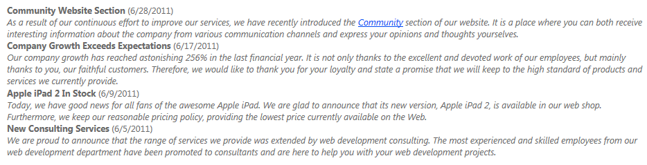

Displaying Kentico content in external applications
You can utilize the Kentico API and Controls in external web applications to load and display data from the Kentico database.
Important: You first need to integrate the Kentico API libraries into your external application and connect to a Kentico database according to the steps described on the Using the Kentico API externally page.
To use Kentico controls, ASCX transformations and other API or components related to web forms, you need to install the Kentico.Libraries.Web.UI integration package.
Note: The information on this page applies to external web form applications. If you wish to display Kentico content in an MVC application, proceed according to the instructions and best practices in the Developing sites using ASP.NET MVC chapter.
Enabling ASCX transformations in external applications
Adding the CMSTransformation class
The CMSTransformation partial class allows you to write your own methods for use in ASCX transformations. The system checks the CMSTransformation class for method definitions when loading transformations – an error may occur if the class is not present in your project.
If you plan to use ASCX transformations, add the class to your external project:
Create a new class file in your project named CMSTransformation.cs.
In web site projects, add the file into the App_Code folder.
In web application projects, you can create the class in any location.
Add the following code into the class:
namespaceCMS.DocumentEngine.Web.UI{/// <summary>/// Base class for transformation methods/// </summary>publicpartialclassCMSTransformation : CMSAbstractTransformation{}}If you wish to use E-commerce or Message board transformation methods, copy the default content of the CMSTransformation partial class from the Kentico project:
~/App_Code/CMSModules/Ecommerce/CMSTransformation.cs
~/App_Code/CMSModules/MessageBoards/CMSTransformation.cs
Execute the following code in the Application_BeginRequest method in your application's Global.asax file (create the file if necessary).
voidApplication_BeginRequest(objectsender, EventArgs e){...if(CMS.DataEngine.CMSApplication.Init()){// Sets CMSTransformation as the base class for transformation methodsCMS.PortalEngine.TransformationInfoProvider.TransformationBaseClass ="CMS.DocumentEngine.Web.UI.CMSTransformation";}}
You can now use all default methods in ASCX transformations and define custom methods inside the CMSTransformation partial class.
Running without the Virtual path provider
Kentico uses a virtual path provider to retrieve the code of ASCX transformations. If you cannot use the virtual path provider in your environment (e.g. when using precompiled applications), you need to:
Save your virtual objects in Kentico to the local disk:
Open the System application in Kentico.
Select the Virtual objects tab.
Click Store all virtual objects in file system.
Copy the CMS\CMSVirtualFiles folder from the Kentico project the to the root of your own project.
See Deployment mode for virtual objects for more information.
Note: To ensure that your application uses the physical files in the CMSVirtualFiles folder, deployment mode must remain On for the connected Kentico application.
Registering file handling routes
Kentico provides several handlers for retrieving images and other types of files (for example the getattachment handler for loading page attachments). If you wish to use these handlers in your external web application, you need to register the required routes.
Edit your application's Global.asax file.
Execute the CMSApplication.PreInit method in the Application_Start method:
Add the routes from CMS.Routing.Web.HttpHandlerRouteTable into your application's RouteTable.
voidApplication_Start(objectsender, EventArgs e){// Runs the preinitialization of the Kentico API required for the route registrationCMS.DataEngine.CMSApplication.PreInit();RouteConfig.RegisterRoutes(System.Web.Routing.RouteTable.Routes);}usingSystem.Web.Routing;usingCMS.Routing.Web;publicstaticclassRouteConfig{publicstaticvoidRegisterRoutes(RouteCollection routes){using(routes.GetWriteLock()){// Registers the Kentico handler routesforeach(varrouteinHttpHandlerRouteTable.Default.GetRoutes()){routes.Add(route);}}// Add the Kentico routes BEFORE any other routes to ensure that they work correctly}}
Example - Displaying content from Kentico
Using the Kentico API
The following example shows how to retrieve page content from the Kentico database and display it using a standard ASP.NET Repeater control.
Create a new page (web form) in your external web project using Visual Studio.
Add the standard ASP.NET Repeater control onto the page.
Insert the following item template markup into the <asp:Repeater> control element:
<asp:Repeater ID="Repeater1"runat="server"><ItemTemplate><strong><%# Eval("NewsTitle") %></strong>(<%# ((DateTime) Eval("NewsReleaseDate")).ToString("d") %>)<br /><i><%# Eval("NewsSummary") %></i><br /></ItemTemplate></asp:Repeater>Switch to the page's code behind and add the following using statements to the beginning of the code:
usingSystem;usingSystem.Data;usingCMS.DocumentEngine;Add the following code into the page's Page_Load method:
protectedvoidPage_Load(objectsender, EventArgs e){// Creates a data set containing all released news pages from the Corporate SiteTreeProvider tree =newTreeProvider();DataSet ds = tree.SelectNodes("cms.news").Path("/news", PathTypeEnum.Children).OnSite("CorporateSite").OrderBy("NewsReleaseDate DESC");// Binds the news data to the Repeater controlRepeater1.DataSource = ds;Repeater1.DataBind();}Note
When performing other types of page operations (editing, deleting etc.), you need to initialize the tree provider within the context of a specific user:
usingCMS.Membership;...// Gets an Info object representing the administrator userUserInfo user = UserInfoProvider.GetUserInfo("administrator");// Creates a tree provider instance using administrator contextTreeProvider tree =newTreeProvider(user);
If you run the website and open the new page, the Repeater control displays a list of news article summaries.

ASP.NET Repeater control displaying news data loaded by the Kentico API
Using Kentico controls
The following example demonstrates how to display the content of Kentico pages using the built-in CMSRepeater control.
Note: For quick access to Kentico controls, add the controls to your Visual Studio Toolbox.
Create a new page (web form) in your application's project using Visual Studio.
Add the CMSRepeater control onto the page.
You can either drag the control from the toolbox or manually register the CMS.DocumentEngine.Web.UI assembly on the page and then use the Visual Studio IntelliSense.
Set the following properties for the CMSRepeater control:
Path: path where you want to load the data from
ClassNames: page code name
SiteName: your site code name
TransformationName: transformation code name
SelectedItemTransformationName: transformation code name
You can generate default transformation when creating a new transformation on the Transformations tab of the page type. The default transformation contains the evaluation of the fields the page type contains. You can add your markup around the content.<%@ Register Assembly="CMS.DocumentEngine.Web.UI"Namespace="CMS.DocumentEngine.Web.UI"TagPrefix="cms"%>...<cms:CMSRepeater ID="CMSRepeater1"runat="server"Path="/Articles/%"ClassNames="dancinggoat.article"SiteName="DancingGoat"TransformationName="dancinggoat.article.preview"SelectedItemTransformationName="dancinggoat.article.detail"/>
Save the web form.
Right-click the web form in the Solution explorer and select View in Browser.
The page will display the data that you loaded in the CMSRepeater control.
Handling page links in external applications
The default URLs of Kentico pages are based on the structure of the content tree and the settings of individual pages. These URLs will not work correctly outside of the Kentico application.
The following steps extend the previous example so that links in transformations used in the repeater control work in external applications.
Log in to the Kentico administration interface and open the Page types application.
Edit (
 ) the page type that contains the transformation that you specified in the TransformationName property of the repeater.
) the page type that contains the transformation that you specified in the TransformationName property of the repeater.Select the Transformations tab and edit the transformation.
Place a link in the transformation code that defines the link URL:
<a href="?aliasPath=<%# Eval("NodeAliasPath") %>">Click Save.
You could also use the GetDocumentUrl() transformation method generates page URLs in the default Kentico format. The link URL that you created leads to the same page containing the listing control, but with an aliasPath parameter in the query string of the URL. The parameter contains the alias path of the corresponding page.
Kentico listing controls automatically process the aliasPath URL parameter and insert its value into the Path property. In this case, the link URLs ensure that the CMSRepeater control only loads one specific page. When the source data only contains one page, the control uses the transformation specified by the SelectedItemTransformationName property to display the details of the given page.
Note: Controls cache transformations, so you need to restart your application to apply the changes.
Implementing custom page selection for listing controls
You can alternatively use your own custom logic to dynamically set the path of listing controls according to the URL or other variables.
For example, the following steps demonstrate how to ensure page selection based on a custom URL parameter:
Edit the transformation that you specified in the TransformationName property of the repeater again and change the name of the URL parameter in the link code to customParameter.
<a href="?customParameter=<%# Eval("NodeAliasPath") %>">Open the markup of the page in Visual Studio and set the DataBindByDefault property of the CMSRepeater control to false.
In the page's code behind, add the following code into the Page_Load method:
protectedvoidPage_Load(objectsender, EventArgs e){// Checks whether the URL contains the 'customParameter' query string parameterif(Request.QueryString["customParameter"] !=null){// Limits the path of the CMSRepeater to the page specified by the URL parameterCMSRepeater1.Path = Request.QueryString["customParameter"];// Sets a "detail view" transformationCMSRepeater1.TransformationName ="dancinggoat.article.detail";}else{// Loads pages from the entire website if the URL doesn't contain the 'customParameter' parameterCMSRepeater1.Path ="/%";// Sets a "list view" transformationCMSRepeater1.TransformationName ="dancinggoat.article.preview";}// Loads and binds the data of the CMSRepeater control (with regard to the dynamically set Path)CMSRepeater1.ReloadData(true);}Setting control properties dynamically
By default, Kentico listing controls load content during the Init stage of the control life cycle. If you need to programmatically assign control properties that affect the content, use one of the following approaches:
Set the DelayedLoading property to true in the control's markup.
This moves the automatic data binding to the control's Load event.
Assign the required properties during the page's Load event (in the Page_Load handler) or sooner.
OR
Set the DataBindByDefault property to false in the control's markup.
This completely disables automatic data binding for the control.
Assign the required properties at any appropriate point in the page life cycle.
Explicitly call the control's ReloadData(true) method.
The control then loads the content based on the dynamically assigned properties.
The page now uses the customParameter query string parameter to select specific pages. The custom parameter works the same way as the default aliasPath parameter.